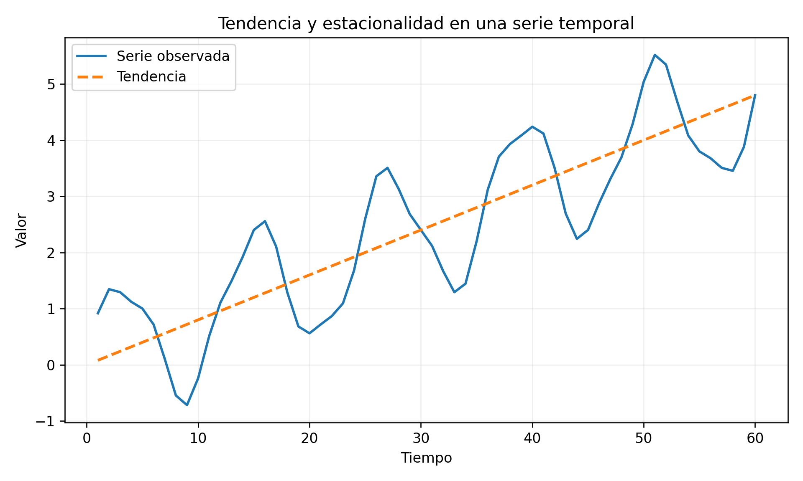

Una serie de tiempo es una secuencia de observaciones ordenadas cronológicamente. A diferencia de una muestra transversal, el orden contiene información y las observaciones pueden presentar dependencia temporal.
El análisis de series de tiempo busca describir, modelar y pronosticar esta dependencia. Los enfoques clásicos utilizan estructuras como tendencia, estacionalidad, autocorrelación y modelos ARIMA. Los métodos de aprendizaje automático transforman la historia temporal en variables predictoras y utilizan árboles, ensambles, redes neuronales u otros algoritmos.
La evaluación correcta exige respetar el orden cronológico. Una partición aleatoria puede mezclar pasado y futuro, producir fuga de información y generar estimaciones excesivamente optimistas.
ImportanteDefinición esencial
Una serie de tiempo es una sucesión ordenada de variables aleatorias cuya dependencia temporal forma parte de la información del problema. Por ello, entrenamiento, validación y prueba deben respetar el orden cronológico.

Figura 22.1: Una serie temporal puede combinar tendencia, estacionalidad y variación irregular.
Objetivos
Al finalizar el capítulo, el lector podrá:
representar una serie temporal;
identificar tendencia y estacionalidad;
definir estacionariedad;
interpretar autocovarianza y autocorrelación;
comprender procesos AR, MA y ARMA;
formular modelos ARIMA;
interpretar diferenciación;
construir variables rezagadas;
evitar fuga temporal;
diseñar validación temporal;
evaluar pronósticos;
comprender pronósticos probabilísticos;
aplicar árboles, Random Forest y redes neuronales;
comparar enfoques estadísticos y de aprendizaje automático.
Definición
La formulación clásica de series temporales puede consultarse en Box et al. (2015), Hamilton (1994) y Brockwell y Davis (2016).
Una serie de tiempo es una colección
\[
\{Y_t:t\in\mathcal{T}\},
\]
donde \(t\) representa tiempo.
En tiempo discreto:
\[
t=1,2,\ldots,T.
\]
Una realización observada es
\[
y_1,y_2,\ldots,y_T.
\]
Componentes
Una descomposición aditiva es
\[
Y_t=T_t+S_t+C_t+\varepsilon_t,
\]
donde:
\(T_t\): tendencia;
\(S_t\): estacionalidad;
\(C_t\): ciclo;
\(\varepsilon_t\): componente irregular.
Modelo multiplicativo
Cuando la amplitud estacional aumenta con el nivel:
\[
Y_t=T_tS_tC_t\varepsilon_t.
\]
Aplicando logaritmos se obtiene una forma aditiva.
Tendencia
La tendencia describe el comportamiento de largo plazo.
Puede ser:
creciente;
decreciente;
lineal;
no lineal;
localmente cambiante.
Estacionalidad
La estacionalidad es un patrón que se repite con periodo conocido:
Es problemático si \(y_i\) es cero o cercano a cero.
MASE
\[
MASE
=
\frac{
\frac{1}{n}\sum|e_i|
}{
\frac{1}{T-m}
\sum_{t=m+1}^{T}|y_t-y_{t-m}|
}.
\]
Permite comparación entre series.
AdvertenciaPrecaución al comparar métricas
MAE y RMSE conservan las unidades de la serie; RMSE penaliza con mayor intensidad los errores grandes. MAPE puede ser inestable cuando los valores observados son cero o cercanos a cero. MASE facilita comparaciones entre series al escalar el error respecto de un pronóstico ingenuo.
Pronósticos probabilísticos
Un pronóstico completo puede ser una distribución:
\[
P(Y_{t+h}\mid\mathcal{F}_t).
\]
Puede resumirse mediante:
intervalos;
cuantiles;
densidades;
simulaciones.
Cobertura de intervalos
Un intervalo nominal del 95 por ciento debe contener aproximadamente el 95 por ciento de observaciones futuras bajo calibración correcta.
Permiten relacionar posiciones distantes sin recurrencia estricta.
Modelos híbridos
Puede combinarse:
ARIMA para estructura lineal;
aprendizaje automático para residuos;
descomposición estacional;
modelos separados por componentes.
Pronóstico jerárquico
En datos agregados, los pronósticos deben ser coherentes:
\[
Y_{\text{total}}
=
\sum_jY_j.
\]
Se emplean métodos de reconciliación.
Series múltiples
Una colección de series puede compartir información.
Se distinguen:
modelos locales: uno por serie;
modelos globales: un modelo común.
Concept drift
La relación temporal puede cambiar.
Se requiere monitorear:
error;
distribución;
residuos;
importancia de variables;
calibración.
Residuos
Un modelo adecuado debe dejar residuos aproximadamente:
centrados en cero;
sin autocorrelación;
con varianza estable;
sin estructura sistemática.
Prueba Ljung-Box
Contrasta autocorrelaciones conjuntas de residuos.
Rechazar sugiere dependencia temporal no modelada.
Selección de modelos
AIC:
\[
AIC=-2\log L+2k.
\]
BIC:
\[
BIC=-2\log L+k\log n.
\]
En aprendizaje automático debe priorizarse desempeño fuera de muestra mediante validación temporal.
Línea base
Todo modelo debe compararse con referencias simples:
último valor;
media;
tendencia;
pronóstico estacional ingenuo.
Un modelo complejo que no supera la línea base no agrega valor.
Pronóstico ingenuo
\[
\widehat{Y}_{t+h|t}=Y_t.
\]
Ingenuo estacional
\[
\widehat{Y}_{t+h|t}=Y_{t+h-m}.
\]
Intervalos y aprendizaje automático
Puede utilizarse:
regresión cuantílica;
conformal prediction;
bootstrap temporal;
ensambles;
modelos probabilísticos.
Evaluación por horizonte
El error debe analizarse para cada horizonte:
\[
MAE(h),
\qquad
RMSE(h).
\]
Un modelo puede ser bueno a corto plazo y malo a largo plazo.
Seudocódigo formal para pronóstico con validación temporal
NotaSeudocódigo matemático formal
Algoritmo Pronóstico-con-Origen-MóvilEntrada: serie y_1,...,y_T, horizonte h, puntos de corte τ_1<...<τ_K, algoritmo de ajuste ASalida: errores de validación temporal1. Para k = 1,...,K: a) Definir el conjunto de entrenamiento D_k = {y_1,...,y_{τ_k}}. b) Ajustar el modelo M_k = A(D_k). c) Pronosticar \hat y_{τ_k+j|τ_k}, j=1,...,h. d) Comparar con los valores observados y_{τ_k+1},...,y_{τ_k+h}. e) Calcular la pérdida por horizonte \ell_{k,j} = L(y_{τ_k+j}, \hat y_{τ_k+j|τ_k}).2. Agregar los resultados: \widehat R_j = (1/K)\sum_{k=1}^K \ell_{k,j}, j=1,...,h.3. Reportar el error global y el error específico por horizonte.
Hyndman, Rob J., y George Athanasopoulos. 2021. Forecasting: Principles and Practice. 3.ª ed. OTexts.
Ejecutar el código
# Series de tiempo\index{Series de tiempo} y aprendizaje automático {#sec-series-tiempo}## Introducción {.unnumbered}Una serie de tiempo es una secuencia de observaciones ordenadas cronológicamente. A diferencia de una muestra transversal, el orden contiene información y las observaciones pueden presentar dependencia temporal.El análisis de series de tiempo busca describir, modelar y pronosticar esta dependencia. Los enfoques clásicos utilizan estructuras como tendencia, estacionalidad, autocorrelación\index{Autocorrelación} y modelos ARIMA\index{ARIMA}. Los métodos de aprendizaje automático transforman la historia temporal en variables predictoras y utilizan árboles, ensambles, redes neuronales u otros algoritmos.La evaluación correcta exige respetar el orden cronológico. Una partición aleatoria puede mezclar pasado y futuro, producir fuga de información y generar estimaciones excesivamente optimistas.::: {.callout-important title="Definición esencial" appearance="default" icon="true"}Una **serie de tiempo** es una sucesión ordenada de variables aleatorias cuya dependencia temporal forma parte de la información del problema. Por ello, entrenamiento, validación y prueba deben respetar el orden cronológico.:::{#fig-serie-componentes width=84% fig-alt="Serie temporal oscilante con una tendencia ascendente superpuesta"}## Objetivos {.unnumbered}Al finalizar el capítulo, el lector podrá:1. representar una serie temporal;2. identificar tendencia y estacionalidad;3. definir estacionariedad;4. interpretar autocovarianza y autocorrelación;5. comprender procesos AR, MA y ARMA;6. formular modelos ARIMA;7. interpretar diferenciación;8. construir variables rezagadas;9. evitar fuga temporal;10. diseñar validación temporal;11. evaluar pronósticos;12. comprender pronósticos probabilísticos;13. aplicar árboles, Random Forest y redes neuronales;14. comparar enfoques estadísticos y de aprendizaje automático.## Definición {.unnumbered}La formulación clásica de series temporales puede consultarse en @box2015time, @hamilton1994time y @brockwell2016introduction.Una serie de tiempo es una colección$$\{Y_t:t\in\mathcal{T}\},$$donde $t$ representa tiempo.En tiempo discreto:$$t=1,2,\ldots,T.$$Una realización observada es$$y_1,y_2,\ldots,y_T.$$## Componentes {.unnumbered}Una descomposición aditiva es$$Y_t=T_t+S_t+C_t+\varepsilon_t,$$donde:- $T_t$: tendencia;- $S_t$: estacionalidad;- $C_t$: ciclo;- $\varepsilon_t$: componente irregular.## Modelo multiplicativo {.unnumbered}Cuando la amplitud estacional aumenta con el nivel:$$Y_t=T_tS_tC_t\varepsilon_t.$$Aplicando logaritmos se obtiene una forma aditiva.## Tendencia {.unnumbered}La tendencia describe el comportamiento de largo plazo.Puede ser:- creciente;- decreciente;- lineal;- no lineal;- localmente cambiante.## Estacionalidad {.unnumbered}La estacionalidad es un patrón que se repite con periodo conocido:$$S_{t+m}=S_t.$$Ejemplos:- 12 meses;- 7 días;- 24 horas;- 4 trimestres.## Estacionariedad débil {.unnumbered}Un proceso es débilmente estacionario si:$$\mathbb{E}(Y_t)=\mu$$es constante y$$\operatorname{Cov}(Y_t,Y_{t+h})=\gamma(h)$$depende solo del rezago $h$.## Autocovarianza {.unnumbered}$$\gamma(h)=\operatorname{Cov}(Y_t,Y_{t-h}).$$Para $h=0$:$$\gamma(0)=\operatorname{Var}(Y_t).$$## Autocorrelación {.unnumbered}$$\rho(h)=\frac{\gamma(h)}{\gamma(0)}.$$Se cumple$$-1\leq\rho(h)\leq1.$$## ACF muestral {.unnumbered}$$\widehat{\rho}(h)=\frac{\sum_{t=h+1}^{T}(y_t-\overline{y})(y_{t-h}-\overline{y})}{\sum_{t=1}^{T}(y_t-\overline{y})^2}.$$La ACF ayuda a detectar dependencia y estacionalidad.## Ruido blanco {.unnumbered}Un proceso de ruido blanco satisface:$$\mathbb{E}(\varepsilon_t)=0,$$$$\operatorname{Var}(\varepsilon_t)=\sigma^2,$$$$\operatorname{Cov}(\varepsilon_t,\varepsilon_s)=0\quad (t\neq s).$$## Caminata aleatoria {.unnumbered}$$Y_t=Y_{t-1}+\varepsilon_t.$$No es estacionaria porque su varianza crece con el tiempo.## Diferenciación {.unnumbered}La primera diferencia es$$\nabla Y_t=Y_t-Y_{t-1}.$$La diferencia estacional es$$\nabla_mY_t=Y_t-Y_{t-m}.$$Se utilizan para eliminar tendencia o estacionalidad.## Operador rezago {.unnumbered}Defínase$$BY_t=Y_{t-1}.$$Entonces$$\nabla Y_t=(1-B)Y_t.$$La diferencia de orden $d$ es$$\nabla^dY_t=(1-B)^dY_t.$$## Modelo autorregresivo AR(p) {.unnumbered}$$Y_t=c+\phi_1Y_{t-1}+\cdots+\phi_pY_{t-p}+\varepsilon_t.$$El valor presente depende de sus propios rezagos.## AR(1) {.unnumbered}$$Y_t=c+\phi Y_{t-1}+\varepsilon_t.$$Para estacionariedad se requiere$$|\phi|<1.$$Su media es$$\mu=\frac{c}{1-\phi}.$$## Modelo MA(q) {.unnumbered}$$Y_t=\mu+\varepsilon_t+\theta_1\varepsilon_{t-1}+\cdots+\theta_q\varepsilon_{t-q}.$$El valor depende de perturbaciones actuales y pasadas.## Modelo ARMA(p,q) {.unnumbered}$$Y_t=c+\sum_{i=1}^{p}\phi_iY_{t-i}+\varepsilon_t+\sum_{j=1}^{q}\theta_j\varepsilon_{t-j}.$$Se utiliza para series estacionarias.## Modelo ARIMA(p,d,q) {.unnumbered}Una serie se diferencia $d$ veces y se ajusta un ARMA:$$\phi(B)(1-B)^dY_t=c+\theta(B)\varepsilon_t.$$Los parámetros son:- $p$: orden autorregresivo;- $d$: diferenciación;- $q$: media móvil.## ARIMA estacional {.unnumbered}$$ARIMA(p,d,q)(P,D,Q)_m.$$Incluye componentes estacionales con periodo $m$.## Identificación {.unnumbered}Se utilizan:- gráfica temporal;- ACF;- PACF;- pruebas de raíz unitaria;- criterios AIC y BIC;- diagnóstico de residuos.## PACF {.unnumbered}La autocorrelación parcial en rezago $h$ mide la relación entre $Y_t$ y $Y_{t-h}$ controlando rezagos intermedios.Es útil para identificar órdenes autorregresivos.## Prueba de raíz unitaria {.unnumbered}La prueba Dickey-Fuller aumentada contrasta una raíz unitaria.No rechazar no demuestra estacionariedad; indica evidencia insuficiente contra la raíz unitaria.## Suavizamiento exponencial {.unnumbered}El nivel simple se actualiza mediante$$\ell_t=\alpha y_t+(1-\alpha)\ell_{t-1},$$con$$0<\alpha<1.$$El pronóstico es$$\widehat{y}_{t+h|t}=\ell_t.$$## Método de Holt {.unnumbered}Incluye nivel y tendencia:$$\ell_t=\alpha y_t+(1-\alpha)(\ell_{t-1}+b_{t-1}),$$$$b_t=\beta(\ell_t-\ell_{t-1})+(1-\beta)b_{t-1}.$$## Holt-Winters {.unnumbered}Añade una componente estacional y puede formularse en versión aditiva o multiplicativa.## Pronóstico h pasos adelante {.unnumbered}Se denota por$$\widehat{Y}_{t+h|t},$$la predicción de $Y_{t+h}$ usando información disponible hasta $t$.## Error de pronóstico {.unnumbered}$$e_{t+h|t}=Y_{t+h}-\widehat{Y}_{t+h|t}.$$## MAE {.unnumbered}$$MAE=\frac{1}{n}\sum_{i=1}^{n}|e_i|.$$## RMSE {.unnumbered}$$RMSE=\sqrt{\frac{1}{n}\sum_{i=1}^{n}e_i^2}.$$## MAPE {.unnumbered}$$MAPE=\frac{100}{n}\sum_{i=1}^{n}\left|\frac{e_i}{y_i}\right|.$$Es problemático si $y_i$ es cero o cercano a cero.## MASE {.unnumbered}$$MASE=\frac{\frac{1}{n}\sum|e_i|}{\frac{1}{T-m}\sum_{t=m+1}^{T}|y_t-y_{t-m}|}.$$Permite comparación entre series.::: {.callout-warning title="Precaución al comparar métricas" appearance="default" icon="true"}MAE y RMSE conservan las unidades de la serie; RMSE penaliza con mayor intensidad los errores grandes. MAPE puede ser inestable cuando los valores observados son cero o cercanos a cero. MASE facilita comparaciones entre series al escalar el error respecto de un pronóstico ingenuo.:::## Pronósticos probabilísticos {.unnumbered}Un pronóstico completo puede ser una distribución:$$P(Y_{t+h}\mid\mathcal{F}_t).$$Puede resumirse mediante:- intervalos;- cuantiles;- densidades;- simulaciones.## Cobertura de intervalos {.unnumbered}Un intervalo nominal del 95 por ciento debe contener aproximadamente el 95 por ciento de observaciones futuras bajo calibración correcta.## Variables rezagadas {.unnumbered}Para aprendizaje automático se construyen:$$X_{t,1}=Y_{t-1},$$$$X_{t,2}=Y_{t-2},$$y así sucesivamente.También pueden incluirse:- medias móviles;- máximos;- mínimos;- calendario;- variables externas.## Ventanas móviles {.unnumbered}Una media de ventana $w$ es$$M_t^{(w)}=\frac{1}{w}\sum_{j=1}^{w}Y_{t-j}.$$Debe calcularse usando únicamente información anterior a $t$.## Variables de calendario {.unnumbered}Pueden incluir:- hora;- día de semana;- mes;- trimestre;- festivos;- temporada.Para variables cíclicas puede utilizarse:$$\sin\left(\frac{2\pi t}{m}\right),\qquad\cos\left(\frac{2\pi t}{m}\right).$$## Variables exógenas {.unnumbered}Un modelo puede incluir$$\mathbf{X}_t.$$Por ejemplo:$$Y_t=f\left(Y_{t-1},\ldots,Y_{t-p},\mathbf{X}_t\right).$$Para pronosticar se necesitan valores futuros o pronósticos de las variables exógenas.## Fuga temporal {.unnumbered}Existe fuga si una variable usa información futura.Ejemplos:- media móvil centrada;- escalamiento con toda la serie;- imputación usando valores posteriores;- selección de variables con el periodo de prueba;- partición aleatoria.## División temporal {.unnumbered}La partición correcta respeta:$$\text{entrenamiento}<\text{validación}<\text{prueba}.$$El futuro nunca debe utilizarse para construir el pasado.## Validación con origen móvil {.unnumbered}{#fig-validacion-origen-movil width=88% fig-alt="Tres cortes temporales con ventanas de entrenamiento y validación sucesivas"}En cada iteración se entrena con información hasta un tiempo y se evalúa en periodos posteriores.Puede usarse:- ventana expansiva;- ventana deslizante.## Ventana expansiva {.unnumbered}El conjunto de entrenamiento crece:$$\{1,\ldots,t\}\to\{1,\ldots,t+1\}.$$## Ventana deslizante {.unnumbered}Se mantiene una longitud fija:$$\{t-w+1,\ldots,t\}.$$Es útil cuando existe cambio de distribución.## Pronóstico recursivo {.unnumbered}Para múltiples pasos, la predicción anterior se utiliza como entrada:$$\widehat{Y}_{t+2|t}=f\left(\widehat{Y}_{t+1|t},Y_t,\ldots\right).$$Los errores pueden acumularse.## Pronóstico directo {.unnumbered}Se entrena un modelo diferente para cada horizonte:$$f_1,f_2,\ldots,f_H.$$Reduce acumulación, pero requiere más modelos.## Estrategia multioutput {.unnumbered}Un modelo produce simultáneamente:$$(\widehat{Y}_{t+1},\ldots,\widehat{Y}_{t+H}).$$## Árboles y bosques {.unnumbered}Random Forest puede usar:- rezagos;- estadísticas móviles;- variables calendario;- variables meteorológicas.Ventajas:- no linealidad;- interacciones;- poca transformación.Limitación: extrapola mal tendencias fuera del rango de entrenamiento.## Gradient boosting {.unnumbered}Los modelos boosting suelen ser muy competitivos en series tabulares con variables rezagadas.Requieren validación temporal y control de sobreajuste.## Redes neuronales recurrentes {.unnumbered}Una RNN actualiza un estado:$$\mathbf{h}_t=\phi\left(\mathbf{W}_x\mathbf{x}_t+\mathbf{W}_h\mathbf{h}_{t-1}+\mathbf{b}\right).$$El estado resume información pasada.## Gradientes en RNN {.unnumbered}La retropropagación a través del tiempo multiplica Jacobianas repetidamente, lo cual puede producir gradientes desvanecientes o explosivos.## LSTM {.unnumbered}Las redes LSTM introducen compuertas para controlar el flujo de información [@hochreiter1997long].Incluyen:- compuerta de olvido;- compuerta de entrada;- estado de celda;- compuerta de salida.## Atención y transformers {.unnumbered}Los transformers modelan dependencias mediante atención:$$Attention(Q,K,V)=softmax\left(\frac{QK^{\mathsf T}}{\sqrt{d_k}}\right)V.$$Permiten relacionar posiciones distantes sin recurrencia estricta.## Modelos híbridos {.unnumbered}Puede combinarse:- ARIMA para estructura lineal;- aprendizaje automático para residuos;- descomposición estacional;- modelos separados por componentes.## Pronóstico jerárquico {.unnumbered}En datos agregados, los pronósticos deben ser coherentes:$$Y_{\text{total}}=\sum_jY_j.$$Se emplean métodos de reconciliación.## Series múltiples {.unnumbered}Una colección de series puede compartir información.Se distinguen:- modelos locales: uno por serie;- modelos globales: un modelo común.## Concept drift {.unnumbered}La relación temporal puede cambiar.Se requiere monitorear:- error;- distribución;- residuos;- importancia de variables;- calibración.## Residuos {.unnumbered}Un modelo adecuado debe dejar residuos aproximadamente:- centrados en cero;- sin autocorrelación;- con varianza estable;- sin estructura sistemática.## Prueba Ljung-Box {.unnumbered}Contrasta autocorrelaciones conjuntas de residuos.Rechazar sugiere dependencia temporal no modelada.## Selección de modelos {.unnumbered}AIC:$$AIC=-2\log L+2k.$$BIC:$$BIC=-2\log L+k\log n.$$En aprendizaje automático debe priorizarse desempeño fuera de muestra mediante validación temporal.## Línea base {.unnumbered}Todo modelo debe compararse con referencias simples:- último valor;- media;- tendencia;- pronóstico estacional ingenuo.Un modelo complejo que no supera la línea base no agrega valor.## Pronóstico ingenuo {.unnumbered}$$\widehat{Y}_{t+h|t}=Y_t.$$## Ingenuo estacional {.unnumbered}$$\widehat{Y}_{t+h|t}=Y_{t+h-m}.$$## Intervalos y aprendizaje automático {.unnumbered}Puede utilizarse:- regresión cuantílica;- conformal prediction;- bootstrap temporal;- ensambles;- modelos probabilísticos.## Evaluación por horizonte {.unnumbered}El error debe analizarse para cada horizonte:$$MAE(h),\qquadRMSE(h).$$Un modelo puede ser bueno a corto plazo y malo a largo plazo.## Seudocódigo formal para pronóstico con validación temporal {.unnumbered}::: {.callout-note title="Seudocódigo matemático formal" appearance="default" icon="true"}```textAlgoritmo Pronóstico-con-Origen-MóvilEntrada: serie y_1,...,y_T, horizonte h, puntos de corte τ_1<...<τ_K, algoritmo de ajuste ASalida: errores de validación temporal1. Para k = 1,...,K: a) Definir el conjunto de entrenamiento D_k = {y_1,...,y_{τ_k}}. b) Ajustar el modelo M_k = A(D_k). c) Pronosticar \hat y_{τ_k+j|τ_k}, j=1,...,h. d) Comparar con los valores observados y_{τ_k+1},...,y_{τ_k+h}. e) Calcular la pérdida por horizonte \ell_{k,j} = L(y_{τ_k+j}, \hat y_{τ_k+j|τ_k}).2. Agregar los resultados: \widehat R_j = (1/K)\sum_{k=1}^K \ell_{k,j}, j=1,...,h.3. Reportar el error global y el error específico por horizonte.```:::## Aplicación ambiental {.unnumbered}Para pronosticar PM10 pueden utilizarse:- PM10 rezagado;- temperatura;- humedad;- viento;- hora;- día;- estacionalidad;- variables de otras estaciones.La validación debe simular el uso operativo real.## Conexión con R {.unnumbered}```{r}#| eval: falselibrary(forecast)serie <-ts(c(45, 48, 50, 47, 55, 60, 58, 62, 65, 63, 68, 70),frequency =12)modelo <-auto.arima(serie)pronostico <-forecast( modelo,h =6)plot(pronostico)# Variables rezagadas para aprendizaje automáticocrear_rezagos <-function(x, p =3) { resultado <-data.frame(y = x)for (j inseq_len(p)) { resultado[[paste0("lag_", j)]] <- dplyr::lag(x, j) }na.omit(resultado)}```## Ejemplo AR(1) {.unnumbered}Sea$$Y_t=2+0.7Y_{t-1}+\varepsilon_t.$$La media estacionaria es$$\mu=\frac{2}{1-0.7}=\frac{20}{3}.$$## Ejemplo de diferencia {.unnumbered}Para:$$100,\;105,\;111,\;115,$$las primeras diferencias son:$$5,\;6,\;4.$$## Ejemplo de variable rezagada {.unnumbered}Para predecir $Y_t$ con tres rezagos:$$\mathbf{x}_t=(Y_{t-1},Y_{t-2},Y_{t-3}).$$La primera fila utilizable aparece en $t=4$.## Ventajas de los enfoques clásicos {.unnumbered}1. interpretación;2. intervalos probabilísticos;3. buen desempeño con pocos datos;4. teoría desarrollada;5. diagnóstico de residuos.## Ventajas del aprendizaje automático {.unnumbered}1. no linealidad;2. numerosas variables;3. interacciones;4. series múltiples;5. flexibilidad.## Limitaciones {.unnumbered}1. dependencia temporal;2. riesgo de fuga;3. cambio de distribución;4. incertidumbre futura;5. horizontes múltiples;6. necesidad de validación realista;7. extrapolación limitada en árboles.## Errores frecuentes {.unnumbered}1. dividir aleatoriamente;2. calcular rezagos con información futura;3. ajustar escalamiento con toda la serie;4. evaluar solo un horizonte;5. omitir una línea base;6. usar MAPE con ceros;7. ignorar autocorrelación residual;8. seleccionar modelos con prueba final;9. confundir ajuste histórico con pronóstico;10. usar variables exógenas futuras desconocidas.## Ejercicios conceptuales {.unnumbered}1. Defina estacionariedad.2. Distinga tendencia y estacionalidad.3. Interprete ACF y PACF.4. Compare AR y MA.5. Explique ARIMA.6. ¿Qué es fuga temporal?7. Compare ventana expansiva y deslizante.8. Compare pronóstico recursivo y directo.9. ¿Por qué se necesitan líneas base?10. Compare modelos clásicos y aprendizaje automático.## Ejercicio AR(1) {.unnumbered}Sea:$$Y_t=1+0.5Y_{t-1}+\varepsilon_t.$$1. Verifique estacionariedad.2. Calcule la media.3. Pronostique un paso si $Y_t=10$ y $\mathbb{E}(\varepsilon)=0$.## Ejercicio de métricas {.unnumbered}Observados:$$10,\;12,\;15,\;20.$$Pronósticos:$$11,\;10,\;14,\;22.$$Calcule:1. errores;2. MAE;3. RMSE;4. MAPE.## Ejercicio de validación {.unnumbered}Diseñe una validación de origen móvil para 60 meses:- 36 meses iniciales;- horizonte de 3 meses;- ventana expansiva.Indique las particiones sucesivas.## Ejercicio aplicado {.unnumbered}Diseñe un sistema para pronosticar PM10 diario que incluya:1. limpieza;2. imputación temporal;3. tendencia;4. estacionalidad;5. rezagos;6. variables meteorológicas;7. línea base;8. ARIMA;9. Random Forest;10. boosting;11. validación temporal;12. métricas por horizonte;13. intervalos;14. monitoreo de drift;15. limitaciones ambientales.## Resumen {.unnumbered}En este capítulo se desarrollaron los fundamentos de las series de tiempo y su relación con aprendizaje automático.Se estudiaron tendencia, estacionalidad, estacionariedad, autocorrelación, ruido blanco, diferenciación y modelos AR, MA, ARMA y ARIMA.También se analizaron suavizamiento exponencial, pronósticos probabilísticos, métricas, rezagos, ventanas móviles y variables exógenas.Finalmente, se desarrollaron validación temporal, estrategias multihorizonte, árboles, ensambles, RNN, LSTM, transformers, modelos híbridos, monitoreo y prevención de fuga temporal.## Referencias del capítulo {.unnumbered}Los fundamentos se apoyan en @box2015time, @hamilton1994time, @hyndman2021forecasting y @hochreiter1997long.